HMR (Human Mesh Recovery) 任务是从单张图像预测 3D 人体 mesh。现有方法大多基于 SMPL，泛化到野外 (in-the-wild) 困难，且不支持用户引导。SAM 3D Body (3DB) 由 Meta + CMU (Jitendra Malik 组) 提出，是首个使用 MHR 参数化模型的单图全身 HMR 模型，支持 2D keypoint / mask 可选 prompt（SAM 家族风格），在野外泛化上达到 SOTA。
论文报告在定性用户偏好研究和传统定量分析上均显著超越前作。具体数值指标需查阅 PDF 全文（本笔记基于 arXiv 摘要页分析）。
┌─────────────────────────────────────────────────────────────────────┐ │ SAM 3D Body (3DB) Pipeline │ ├─────────────────────────────────────────────────────────────────────┤ │ │ │ 输入: 单张图像 (in-the-wild) │ │ + [可选] 2D keypoint prompt ─┐ │ │ + [可选] mask prompt ─┤ 辅助引导 (SAM 风格) │ │ │ ─┘ │ │ ▼ │ │ ┌──────────────────────────────────────────┐ │ │ │ Encoder-Decoder 架构 │ │ │ │ │ │ │ │ 图像 backbone → 特征提取 │ │ │ │ + prompt 编码 (可选) │ │ │ │ → decoder 输出 MHR 参数 │ │ │ │ • body pose (136 参数) │ │ │ │ • skeleton (68 参数) │ │ │ │ • body shape (βˢ) │ │ │ │ • hand shape (βʰ) │ │ │ │ • head shape (βˢˢ) │ │ │ │ • expressions (βᶠ, 72 FACS) │ │ │ └──────────────────────────────────────────┘ │ │ │ │ │ ▼ │ │ [MHR 模型前向] │ │ X(β, θ) = M(X̃(βˢ,βᶠ,θ), Bᵏ(βᵏ), θ, ω) │ │ → 3D 全身 mesh (含 body + hands + feet) │ │ │ │ │ ▼ │ │ 输出: 全身 3D mesh + 关节姿态 │ │ │ │ ───────────────────────────────────────────── │ │ 训练数据来源 (多阶段标注流水线): │ │ • 手动 keypoint 标注 │ │ • 可微优化 │ │ • 多视角几何 (triangulation) │ │ • 密集 keypoint 检测 │ │ │ │ 数据引擎 (主动选择): │ │ • 高效选择处理数据 → 确保多样性 │ │ • 主动收集罕见姿态 + 罕见成像条件 │ └─────────────────────────────────────────────────────────────────────┘
高质量 3D 标注是 HMR 训练的瓶颈。3DB 的标注流水线组合多种方法：
| 阶段 | 方法 | 作用 |
|---|---|---|
| 1 | 手动 keypoint 标注 | 种子标注，提供初始监督 |
| 2 | 可微优化 | 从 2D 标注优化 MHR 参数 |
| 3 | 多视角几何 | 多视角 triangulation 得 3D 关键点 |
| 4 | 密集 keypoint 检测 | 自动化扩展标注规模 |
images/sam3d-body-zhihu/。数学公式通过 MathJax 渲染，LaTeX 源自原文。去年 11 月中旬，Meta 推出了 SAM3D 系列的两个重量级开源模型：SAM-3D-Objects 与 SAM-3D-Body。前者用于实现通用物体的三维分割与重建，而后者用于 3D 人体姿态与 Mesh 估计 (HPE & Mesh Recovery)。这两个模型的问世，凭借极高的精度和在复杂场景下的鲁棒性，迅速震撼了计算机视觉领域。
作为 3DHPE 领域的研究者，在研读论文并深度拆解 SAM-3D-Body (3DB) 的源代码后，我意识到 3DB 并非简单的模型堆砌，而是计算机视觉发展至今的集大成之作。可以说会当凌绝顶，一览众山小。它不仅完美融合了 Learning-based (基于学习) 与 Geometry-based (基于几何) 的两大技术体系，还实现了一体多能、数据飞轮和表示解耦三个维度的范式突破。这三大突破并不是凭空而来的技术跃迁，而是 Meta 团队通过精巧的模型架构设计、系统化的数据闭环构建与深度的跨领域技术融合，所达成的必然成果。
不过不得不说，论文在诸多核心实现细节上语焉不详 —— 关键模块的交互逻辑、几何约束与学习模型的融合细节等，都缺乏明确阐述；而开源代码的结构又错综复杂，缺少顶层设计说明，给开发者的深度理解带来了不小的门槛。
所以接下来，我就带大家来一次「从理论到实践」的完整拆解。我们会先通读论文，搞清楚模型的核心思路和技术路线；然后一点点拆解代码，复原模型从数据输入到结果输出的完整流程；最后，我会用最简单的方式帮你捋清楚 3DB 的技术本质，并提炼出一版超精简的核心代码，剥离掉那些复杂的工程细节，直接抓住重点，教你快速上手。
现在，请坐稳，我们的技术拆解之旅正式发车！
这篇论文有17页，结构如下。
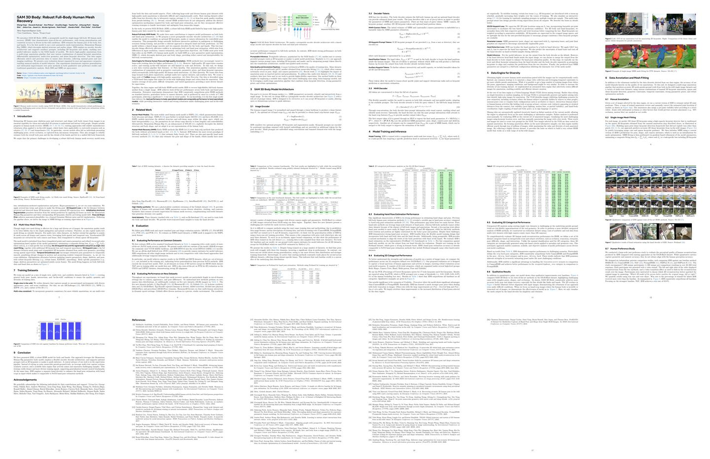
第1、2两章是常规的引言和相关工作介绍，占了两页半。第3章非常概要地介绍了算法逻辑，第4章大致说了一下训练的要点，这最关键的两章只有不到两页，几乎等于什么都没说。后面的5、6、7三章共三页，主要介绍训练集的制作方案，有一定参考价值。第8、9两章则是评测和结论。没有附录。
由于 3DB 揉合了很广泛的技术门类，为避免不熟悉这些领域的读者到处翻找资料，我打算采用这样的方式来阅读：在摘要和第1章的阅读中会多做一些基础知识的介绍，降低门槛。第2章不讲。第3、4两章快速掠过，后面会带大家研读实现结构进行充分理解。第5、6、7三章我会进行总结并谈一下自己的理解。最后第8、9两章也留同感兴趣的同学自行阅读。
如果你已经充分理解了相关的基础知识，可以跳过下面对摘要和第1章的解读。如果你只对 3DB 的算法原理和具体实现感兴趣，也可以跳过整个论文解读的部分。
我们推出了 3DB：一种可通过提示进行单张图像全身 3D 人体网格重建 (HMR) 的模型。该模型在多种真实场景中表现出卓越的性能，具有强大的泛化能力和一致的准确性。3DB 还能够估计人体姿态，包括身体、脚和手的姿态。
这里的意思是：3DB 是一种整合了 3DHMR (即 human mesh recovery，人体网格重建) 和 3DHPE (即 human pose esitimation，人体姿态估计) 两大功能的神经网络模型。主要功能就是根据单张人体图像同时恢复出人体的表面网格以及 3D 骨骼点。
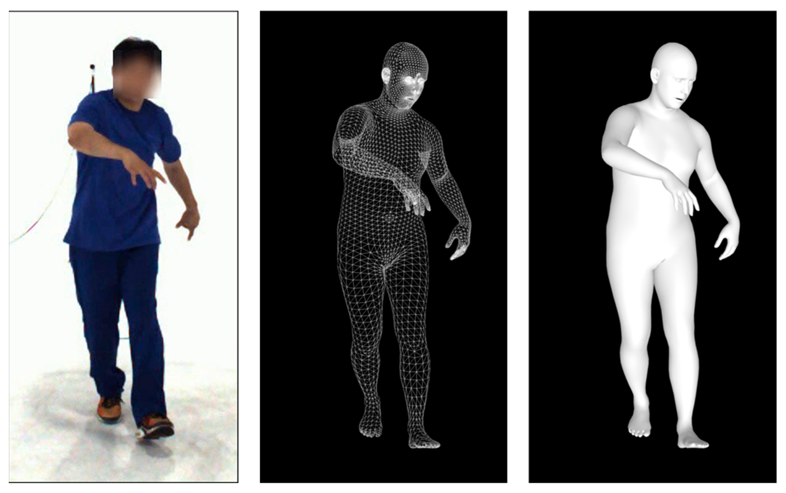
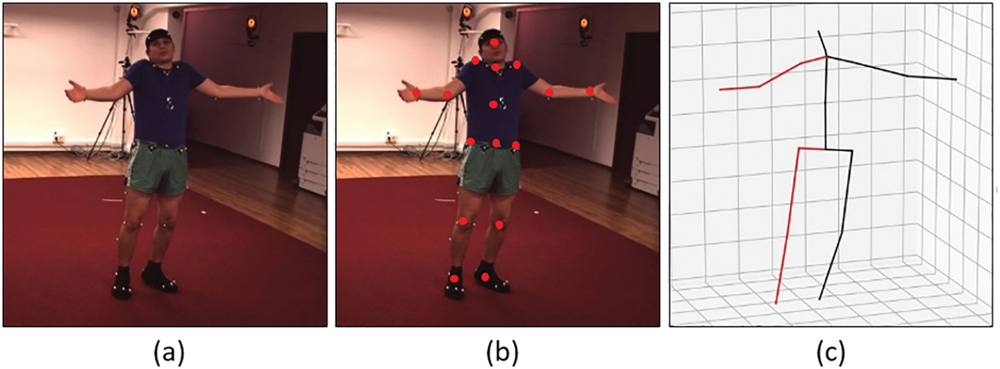
由于后面的很多讨论都会涉及3维重建和相机模型，这里简单介绍一下。
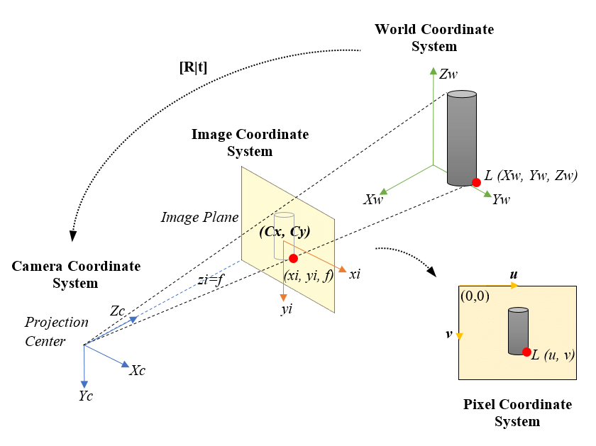
几乎所有的照片像都由大致符合针孔相机模型的相机拍摄。这张图展示的就是针孔相机模型的示意图。
在这个模型中，Projection Center (投影中心)，又称为 Camera Center (相机中心) 或光心，通常被假设是相机镜头的中心。Image Plane (像平面)，也称为成像平面，对应于实际相机中的胶片或感光元件 (如 CMOS 或 CCD 传感器)。像平面位于被摄物和光心之间，光心到像平面的距离被称为焦距，用 $f$ 表示。
到这里你可能会提出疑问：镜头的中心怎么会在像平面的后面？没错，真实相机中镜头肯定是在像平面的前面，但我们通过一个数学上的变换——将像平面绕投影中心做一次镜像对称翻转，就可以得到现在这样的模型。翻转后，图像从倒立的沙漏形变成了直立的三角形。虽然这只是一个数学简化，但它非常方便理解和计算，因此后续我们都使用这种形式的模型。
接下来，让我们进一步探讨这个模型涉及的一些核心概念。首先是坐标系，针孔相机模型中涉及三个主要的坐标系：
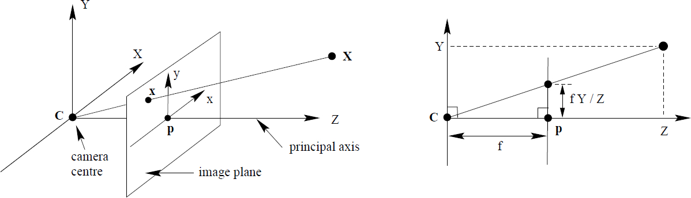
在实际相机中，图像上的位置最终是用像素表示的，而物体坐标通常以米或毫米等物理单位表示。针孔相机模型会经历以下几个步骤完成单位转换：
注意， $f_x, f_y$ 是由相机的物理焦距 $f$ 按照传感器的像素大小进行换算得到的，具体来说： $f_x = \frac{f}{s_x}, \quad f_y = \frac{f}{s_y}$ ，其中， $s_x$ 和 $s_y$ 分别是传感器水平和竖直方向上每个像素的物理尺寸(通常称为像素间距)。由于在大多数相机中像素是正方形的 (不考虑畸变)，因此有 $s_x=s_y$ ，从而 $f_x=f_y$ 。
将上述步骤结合起来，针孔相机模型可以用一个简单的数学公式表示为： $\mathbf{p} = \mathbf{K} [\mathbf{R} | \mathbf{t}] \mathbf{P}_W$，其中：
这个公式就是针孔相机模型的核心，它描述了从三维世界坐标到二维像素坐标的投影变换，分为外参的刚体变换和内参的像素映射两部分。这些基础内容我这里讲的比较快，如果没有听懂的话建议暂停下来研究下。如果不理解这些，下文中关于 3D 部分的内容可能会听不懂。
这里还需要额外说明一下的是，「模型」一词在本文中会有两个含义，一个是指神经网络模型或相机模型，是数理模型的含义；另一个是指 3D Mesh 模型，即由顶点和面构成的 3D 网格，大家注意根据上下文进行区分。
我们回到论文。本文首次采用了一种新的参数化人体的表示方法——Momentum Human Rig (MHR)，该方法将骨骼结构和表面形状分离开来。注意，MHR 是 Meta 提出的方法名称，注意和 HMR 区分。这里介绍一下什么是参数化人体模型。
人体网格重建的目标就是让模型 (比如 NN 神经网络模型) 去直接预测人体的成千上万个表面顶点，就像是给它一张白纸，让它凭空画出一个 3D 小人。因为没有任何限制，NN 很容易画出断手断脚、比例畸形的“怪物”。
而参数化人体模型 (比如最常用的 SMPL 和本文使用的 MHR) 就像是给 NN 提供了一个「数字木偶」作为范本，在这个基准之上进行微调即可，因此：
这样就很好的解决了预测自由度过高导致的预测崩坏的难题。3DB 集成的 MHR 是一个 Meta 自研的参数化人体模型，输入的参数如下表所示。
3DB 只预测了前三组参数。根据这些参数就可以生成出包含多至 18439 个顶点的 3D 人体模型，形态非常逼真。相对于传统的 SMPL 模型，MHR 的优势在于：
其实 MHR还有其它的优势，包括细节精度能灵活换，动画调试更省事，工作软件适配好等，但这些优势并不会体现在 3DB 中，这里就不提了。对这个模型感兴趣的同学可以前往这里和这里深入了解。
再回到论文。3DB 采用编码器-解码器架构，并支持辅助提示 (如 2D 关键点和 Mask)，允许用户进行类似 SAM 系列模型的引导式推理。
SAM3D-body 的名字虽然以 SAM 为前缀，但是和 SAM 模型本身的关系不大，只是在一些底层技术上互通。SAM 是Meta 出品的一系列万物分割模型，用户输入的提示 (即prompt)，说明要哪个物体，SAM 会计算得出物体的掩码图，也就是逐像素的判定物体的轮廓和范围。
SAM 现在已经出到第三代了。支持的输入略有不同，一代和二代可以根据输入的物体包围框或正/负样本点来分割，正负样本点就是用户在图片中点一些点，正样本点在物体内，负样本点在物体外，就是为了让 NN 明白我们要的物体是哪个；三代还支持让用户输入文字来分割出与文字相符的物体。3DB 也沿用了相同的概念和类似的 prompt 处理技术，但目前仅支持指定正负样本点和掩码图，当然，不输入这些 prompt 也可以正常工作。
我们回到论文。我们通过多阶段标注流程生成高质量的标注数据，该流程结合了人工关键点标注、可微优化、多视角几何和密集关键点检测。我们的数据引擎高效选择并处理数据，确保数据多样性，包括罕见的姿态和特殊拍摄条件。我们还提出了一个新的评估数据集，以姿态和外观类别进行组织，支持对模型行为进行细致分析。实验结果表明，与现有方法相比，3DB 在定性用户偏好研究和传统定量分析中均表现出显著提升。3DB 和 MHR 均为开源。
这些后面会在读论文的时候介绍。开源这块呢，秉承了 Meta 的一贯风格，只开源了模型和推理代码，但是数据和训练并没有，压根也没想让你完整复现。
下面是第一章，引言。
从图像中估计人体的 3D 姿态（骨架姿态和结构）以及形状（软组织）是视觉和具身人工智能系统理解和与人互动的重要能力。尽管在人体网格恢复 (HMR) 领域取得了显著进展，现有方法在处理自然场景中的图像时仍表现出不够理想的鲁棒性，这限制了其在机器人技术和生物力学等现实场景中的应用。
这里提到了几个比较重要的工作，包括马普所的工作 TokenHMR，北卡和 NVidia 的 BLADE，Meshcapade 的PromptHMR，推荐大家去看。
具体来说，当前模型在面对具有挑战性的姿态、严重遮挡或不常见的视角时往往表现不佳。此外，它们在统一的全身框架中可靠地估计整体身体姿态以及手脚的细节方面也存在困难。以前做过 HMR 或 HPE 的同学肯定对这些问题深有感触。
我们认为，开发一种可靠的全身人体网格恢复模型的主要挑战来源于数据和模型两个方面。
首先，在数据方面，收集大规模且多样化的人体姿态数据集，并带有高质量的网格标注，本质上是困难且计算成本高的。现有的大多数数据集要么由于实验室捕捉环境而导致多样性不足，要么由于伪标注而导致网格质量较低。
其次，在模型方面，目前的 HMR 架构未能充分解决身体和手部姿态估计所需的不同优化机制，也未能采用有效的训练策略来应对单目图像中的不确定性和模糊性。
这里明确指出了 HMR 的两个关键痛点，然后说：在这项工作中，我们提出了 SAM 3D Body (3DB)，这是一种由我们数据引擎精心构建的大规模高质量人体姿态数据驱动的可靠全身 HMR 模型。
下面细说了本文的贡献，首先是在模型方面：可靠的人体 HMR 模型。我们通过以下三大主要贡献改进了模型在身体和手部姿态估计上的性能：
(i) 我们提出了一种新颖的可提示编码器-解码器架构，使模型能够基于可选的 2D 关键点、掩码或相机信息进行可控的姿态估计。这种可提示设计在训练过程中能自然地在模糊或具有挑战性的场景中实现交互式指导，同时提供了一种一致的方法来整合手部和身体的预测。
Transformers 的介绍资料很多了，我在这里只大概讲一下和 3DB 相关的 ViT (Vision Transformers) 架构和解码器的交叉注意力机制。
最初的 Transformer 论文提出了编码器 (Encoder) 和解码器 (Decoder) 两种结构。简单来说，它们都是由多层同构的 Transformer 层 (Trm 层) 堆叠而成的：编码层包含一个自注意力 (Self-attn) 模块和一个前馈网络 (FFN)。它的任务是理解输入的信息。解码层：在自注意力和前馈网络之间，多了一个交叉注意力 (Cross-attn) 模块。它的任务是参考外部信息来生成新内容。
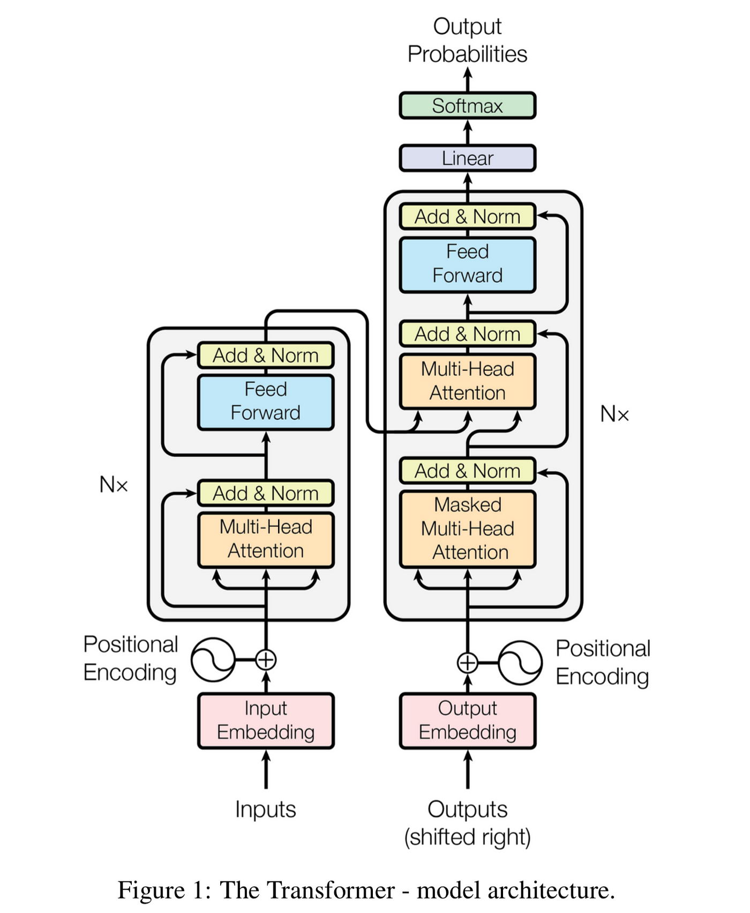
编码器的输入是一串 Token（标记）。在进入网络前，这些 Token 会被映射为相同维度的 Embedding（嵌入向量），形成一个$N\times D$的张量 ($N$是长度，$D$是特征维度)，并加上位置编码来记录顺序信息。
在 LLM (大语言模型) 中：Token 通常是词或词根。目前的 LLM（如 GPT、通义千问）虽然号称仅解码器架构，但由于去除了交叉注意力，其每一层的内部结构其实和编码器是一样的，主要通过因果掩码 (Causal Mask) 来实现自回归的下文预测。
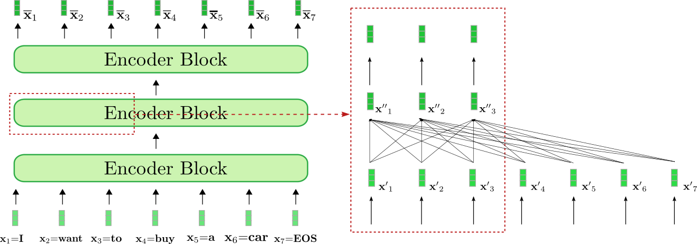
在 ViT 中：由于 Transformer 最初是为文本设计的，ViT (Vision Transformer) 巧妙地将图像也变成了“序列”。它将图片切分成固定大小的图像块 (Patches)，比如 $16\times 16$ 的小方格。
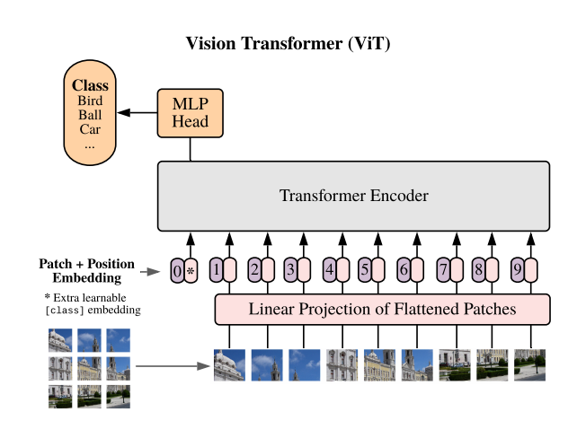
在 3DB 模型的视觉编码器中，我们沿用了这种结构，但针对高分辨率需求做了调整：
重点在于： 与普通分类任务不同，3DB 在输出层舍弃了 CLS Token，而是取用了那 1024 个空间 Token 的输出。这是因为 3DB 需要更精细、带有空间位置的图像信息，而不仅仅是一个模糊的全局总结。
最后，我们要讲到 3DB 是如何把不同信息结合起来的，这就要用到解码器特有的交叉注意力 (Cross-attn) 机制。交叉注意力是不同来源信息进行“对话”的桥梁，它的输入分为两部分：
在原始 Transformer 中，解码器通过它来参考用户输入的文本；而在 3DB 中，图像特征被作为 KV 输入给解码器，而用户提示 (Prompt) 或其他引导信息则作为 Query。这种机制让模型能够一边观察图像 (KV)，一边根据需求 (Query) 生成对应的 3D 表现。
回到论文。
(ii) 我们的模型采用了一个共享的图像编码器和两个分别针对身体和手部的解码器。这种双解码器设计有效缓解了身体和手部姿态估计优化过程中由于输入分辨率、相机估计和监督目标差异而引起的冲突。
(iii) 与大多数依赖 SMPL 人体网格模型的现有工作不同，我们构建的 3DB 基于一种新的参数化网格表示——MHR，它将骨骼姿态和身体形状解耦，从而为全身重建提供了更丰富的控制和可解释性。
然后是在数据方面。
用于多样化人体姿态和高质量标注的数据引擎。 HMR 方法越来越多地依赖大规模的训练数据以提升性能。然而，高质量的 3D 监督数据仍然稀缺，现有的自然场景数据集在规模和多样性上依然有限。为此，我们设计了一条全新数据创建流程，其特点包括：
VLM 是视觉语言模型的意思。LLM，大语言模型大家都很清楚了，通过自回归机制，即以 Next-Token-Prediction 的方式完成用户 prompt 的各种任务，并取得了极大的成功。VLM 是一种同时处理视觉和语言信息的 AI 模型，旨在实现图像和文本之间的深度关联理解，能够完成图像描述、视觉问答等跨模态任务等。比如你可以输入一张图像并询问任何关于这张图像的问题，VLM 可以按照你的具体要求来给出答案，因此用 VLM 来筛选罕见样本是非常简单且有效的方式。
说到 VLM，我们灵感实验室也推出了自研的全开源 VLM ：LLaVA-OneVision-1.5，除了在自家实验室项目中发光发热，OV1.5 本身就是一个六边形战士，其硬实力在开源 VLM 领域具有里程碑意义：性能霸榜，超越 Qwen2.5。在权威评测中，LLaVA-OneVision-1.5 (8B版本) 在 27 个主流基准测试中有 18 个击败了 Qwen2.5-VL-7B。不同于许多只开源权重的模型，LLaVA-OneVision-1.5是真正意义上的真·全开源。不仅开源了模型权重，还开源了数据配方、训练代码、以及详细的训练配置，真正实现了可复现、可商用。在训练阶段：OV1.5 证明了高性能不一定需要天价算力。其 8B 模型仅需 128 张 A800 训练 4 天（成本仅约 \$1.6w），通过独创的数据打包技术实现了 11 倍的效率提升。
广告结束，回到论文。通过数据引擎和全身 HMR 模型的结合，3DB 能够从单张图像中恢复高保真全身人体网格。3DB 在身体和手部姿态估计方面均实现了最先进的性能。大量实验表明，3DB 在标准评估指标上持续优于现有的 HMR 方法，并在未见过的数据集上表现出更强的泛化能力。同时，在一项包含 7800 名参与者的用户研究中，3DB 的视觉质量以 5:1 的显著优势被用户更为偏爱。据我们所知，3DB 是首个单一模型在身体姿态估计上超过专门针对身体的模型，并在手部姿态估计上达到与手部专门模型相当性能的模型，同时在具有挑战性的姿态和自然场景中提供交互式控制和出色的鲁棒性。
这一章就不展开了，有兴趣的同学请自己阅读。
我们的目标是从单张图像中准确、鲁棒且交互式地恢复三维人体网格 (即 MHR 参数)。为此，我们设计了 3DB，一种可提示的编码器–解码器架构，并配备了一套丰富的 prompt tokens。3DB 被设计为具有交互性，因为它可以接受二维关键点或掩模，允许用户或下游系统引导推理过程。
人体 patch 被送入视觉编码器，生成 feature-map F；然后可选的手部 patch 也可以独立编码为 F_hand。
3DB 考虑了两种可选的提示：二维关键点和分割掩模。关键点提示通过位置编码与学习的嵌入相加后进行编码，并作为额外的标记提供给姿态解码器。掩模提示通过卷积嵌入，并与图像嵌入进行逐元素相加。
3DB 有两个解码器：主体解码器输出完整的人体骨架，另一个可选的手部解码器可以提供增强的手部姿态结果。
姿态解码器以一组 Query token 为输入，用于预测 MHR (人体模型参数) 和摄像机参数。Query token 有四种类型：MHR+相机 tokens、二维关键点 prompt tokens、辅助二维/三维关键点 tokens 以及可选的手部位置 tokens。
第4节大致说了一下3DB的模型训练逻辑，基本都属于语焉不详。
损失函数采用多任务加权损失，包含：
但其中 MHR 参数的 GT 是哪来的就很可疑了，难道是从 MHR 模型反推出来的？
部分损失项采用热身调度逐步提升权重，模拟交互式训练场景，通过随机采样提示增强模型对模糊场景的适应能力。对用户提供的关键点提示加大损失权重，保证提示一致性；手部关键点按标注可用性加权，3D关键点需经骨盆/手腕位置归一化。
这些都跟没说一样。推理部分也会在后面的结构分析中细说。
筛选出海量高质量、高多样性的数据
现有 HMR 训练数据存在明显短板：
为解决数据多样性不足的问题，需构建自动化数据引擎实现精准、高效的数据筛选。
3DB 采用基于视觉语言模型 (VLM) 的挖掘策略，而非传统筛选方式。VLM 可自动生成并迭代更新挖掘规则，精准识别遮挡、罕见姿态（如杂技、舞蹈）、人机 / 人际交互、极端尺度、低可见度、手身协同等挑战性场景图像；同时结合模型故障分析，通过半手动评估当前模型在已标注图像上的表现，提取问题样本特征并转化为文本提示，指导 VLM 持续聚焦高价值样本；最终将筛选出的图像路由至人工标注环节，实现针对性数据扩充。
这里并没有说明如何利用 VLM 进行数据挖掘。以我们的经验，要用VLM做大规模的数据筛选，需要将任务转化为判断题，即只判断是不是或有没有，数据引擎能在数千万张图像中高效搜索，最大化每幅标注图像的价值与多样性，成功收集到覆盖罕见姿态、特殊成像条件、复杂交互等场景的多样化数据集，为构建鲁棒性强、适配广泛真实场景的 HMR 模型奠定了数据基础。
机器+人工得到高质量标注
动机：标注质量直接影响模型精度，而现有单图像标注易受深度模糊、遮挡影响，伪真值存在系统误差，多视图数据虽保真度高但标注流程复杂。因此需设计多阶段标注流水线，结合多种技术手段，从单图像和多视图数据中生成高精度 3D 网格伪真值。
方法：分为三个核心环节。一是手动标注，基于 3DB 初步估计的 2D 关节位置，由专业标注员校正并标注关节可见性，排除严重遮挡或模糊导致的标注误差；二是单图像网格拟合，先通过高容量关键点检测器，结合手动标注的稀疏 2D 关键点预测 595 个密集 2D 关键点，再以 3DB 的姿态、形状和相机内参预测为初始化，通过梯度优化最小化 2D 关键点损失、初始化锚定正则化等复合损失，避免模型漂移；三是多视图网格拟合，针对多视图视频数据集，提取同步 2D 关键点并三角化得到稀疏 3D 关键点，初始化网格模型后，通过二阶优化更新参数，加入 3D 关键点损失和时间平滑损失，同时交替优化相机参数、形状、骨骼和姿态，提升标注保真度。
结果：通过多阶段流水线，成功从真实场景单图像数据集和多视图数据集中生成高精度 3D 网格伪真值，既解决了单图像标注的深度模糊与遮挡问题，又利用多视图的时空线索增强了标注可靠性，为模型提供了高质量的训练监督信号。
动机：HMR 模型的性能依赖训练数据的质量、数量与多样性，单一类型数据集难以满足全面训练需求 —— 单视图数据虽多样但几何监督不足，多视图数据保真度高但场景覆盖有限，真实数据易存在质量波动。因此需整合多类型数据集，实现三者的平衡。
方法：训练数据由四类数据集构成。一是单视图真实场景数据集，包括 AIChallenger、MS COCO、3DPW、SA-1B 子集等，覆盖无约束环境下的多样外观、姿态和场景；二是多视图一致性数据集，如 Ego-Exo4D、Harmony4D、EgoHumans 等，提供几何一致性监督，适配复杂人体交互场景；三是高保真合成数据集，基于 Goliath 数据集扩展，提供带精准 MHR 参数的 photorealistic 图像，弥补真实数据的质量短板；四是手部专用数据集，如 Re:Interhand、Goliath 等，提供腕部截断的手部样本，专项训练手部解码器。各类数据集总计 700 万张高质量标注图像，全面覆盖人体姿态、交互、场景等维度。
结果：多类型数据集的组合，既保证了训练数据的规模（700 万张图像），又兼顾了场景多样性（真实 + 合成、单视图 + 多视图）和标注质量（高保真合成数据 + 几何一致性监督），同时为躯干和手部估计提供了专项训练样本，支撑模型在全身体态和手部姿态估计上均达到顶尖性能。
不讲
不讲
总体上的工作流程是这样的：
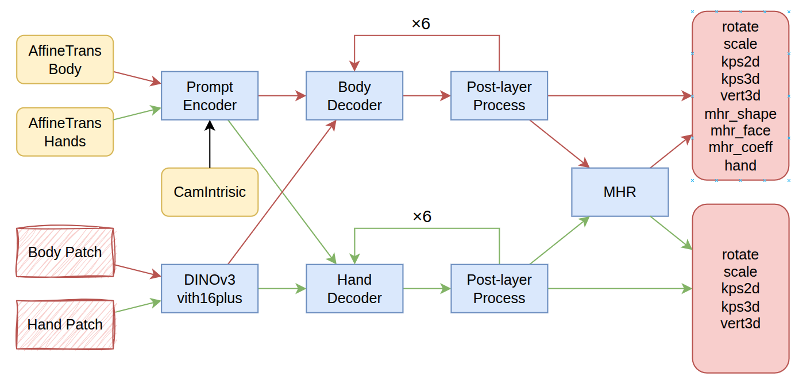
标准的输入是包含完整的图像、一个人的 bbox，以及相机内参的估计。其中 bbox 很容易通过各种人体检测模型获得。相机内参包括像主点坐标和焦距，都是像素单位的。事实上，3DB 对于相机内参估计的精度并不敏感，我自己测下来看，偏差 20% 以内都没太大影响，因此像主点可以直接使用图像的中心像素坐标，焦距如果不知道的话，可以用 MoGe 模型进行估计。此外，3DB 还支持以下额外[可选]的辅助信息输入，可以帮助在复杂场景中做出更准确的估计：
其中正负样本点和前一帧结果，以及上面提到的人体框、相机内参都属于 prompt；而 mask 将和图像一起编码。因此，输入可以分成图像和 prompt 两部分。
下面来看这张结构图中有红线和黑线连接的部分，忽略所有只有绿线连接的节点。图像按人体框裁剪为 patch 后送入 DINOv3 编码器，得到 1280x32x32 的 feature-map；人体 prompt 被送入 Prompt Encoder，得到 1024x145 的 feature。图像作为 KV，Prompt作为Query，两组 feature 各自加入位置编码后一起给到 Body Deocer Layers 作 cross-attention。
Decoder Layer 一共6层，每一层后面还会做一次层后处理，这个层后处理包括MHR模型，这个后面会详细讲解，最后得到一大组结果，包括相机的旋转和缩放修正，2D关键点、3D关键点、mesh 顶点数组、MHR 的三组参数和手部的关键点信息。
接下来，根据手部的关键点信息会再跑一遍上面的流程，即按手的框裁剪为 patch 后编码，再用手部专用的解码器把手部的细节信息估计出来。左手和右手会各跑一遍，即绿线连接的流程。
因为身体的流程和手部的流程大同小异，时间有限，这里我们只介绍身体的处理流程。下面先来看编码部分：
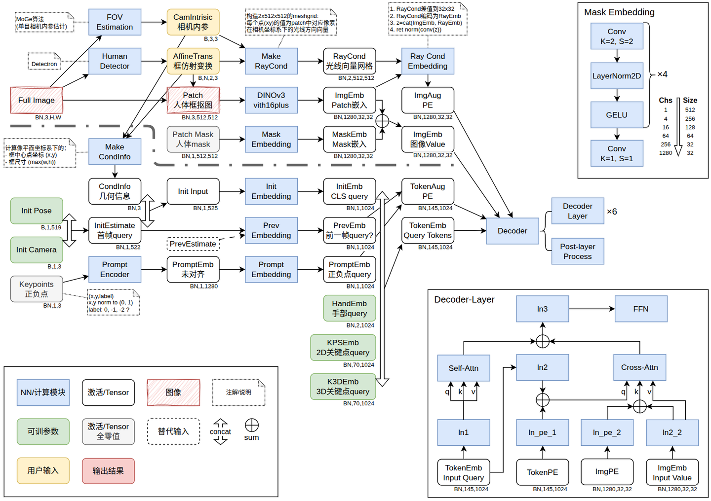
由于结构复杂，我用不同形状和颜色的框来表示不同类别的节点。蓝色方框是神经网络模块，可能是一个无参算子，含参算子或多层堆叠的模块；激活是白色圆框，下面注明了shape。其它颜色和形状的请暂停看下左下角。
中间最大的这一部分就是编码器的处理过程，中间有一条间断虚线将上半部的图像编码和下半部的 prompt 编码划分开。图像部分将图像编码为 ImgEmb 和对应的位置编码 ImgAug，prompt 部分将初始信息和输入的用户提示编码为 TokenEmb 和相应的位置编码 TokenAug。这两对内容最后会送入 Decoder 层进行解码，可以参见右下角的解码层结构。
先来拆解上半部分，FOV Estimation 就是前面说的根据图像估计相机内参的部分，Human Detector 则是从图像中检测人体包围框的算法，分别得到相机内参和仿射变换矩阵。这里的仿射变换矩阵实际上等价于框的 (x,y,w,h)，只是这种形式可以支持旋转，便于裁剪和对齐手部框。事实上这两部分并不含在 3DB 项目中，属于外挂，你可以用任何其它模型完成这两项任务。
回到图像编码流程，patch 会被等比缩放至 512x512，大致的原则是：
接下来由 DINOv3 编码器进行编码，SAM3D 选用的是最大规格的 DINOv3，即 ViT-H16-Plus，得到一个 1280 维，32x32 的特征图。这个特征图会和可选的 mask 的 embedding 进行求和，作为解码器的图像 embedding。mask 的编码过程见右上角小图，首先 mask 会和图像做完全相同的 crop+resize 操作，得到 512x512 的 patch，然后经过 4层的 2x2 卷积、norm、GELU，下采样到 32x32，再用一个 1x1 的卷积将维度对齐到 1280。这样就可以直接和图像embedding 求和了。
这里一个相对复杂的一块是从 Make RayCond到 ImgAugPE 的过程。RayCond 的目的是给特征图的每个空间位置注入相机几何条件，便于解码器感知更精确的位置信息。Meke RayCond 这一步先在 patch 上构造每个像素的网格坐标 $(u,v)$ ，再利用 bbox 的仿射参数把 $(u,v)$ 反推回原图像素坐标 $(x,y)$ 。
接着用相机内参把像素坐标变成归一化成像平面坐标： $(\hat{x},\hat{y})=((x-c_x)/f_x,(y-c_y)/f_y)$ ，形成 $2\times512\times512$ 的 meshgrid，由于 $z=f=1$ ，因此第三维可以省略。到 Ray Cond Embdding 这一步会先将 meshgrid 降采样为 $32\times32$ 。再用 Fourier 位置编码把这 3 维坐标映射成多频率的 sin/cos 特征，使网络更容易表达复杂的空间变化。最后将该编码与图像特征在通道维拼接，通过 $1\times 1$ 卷积和归一化融合回原 embedding 维度，得到带相机条件的特征图。
再来看 prompt 如何编码：
所有有这些部件全部 cat 起来就是 145x1024 的 TokenEmbedding，将作为 Query 输入 decoder。而对应的位置编码就比较简单，其实就是将 TokenEmbedding 复制一份，除 PrevEmbed 和 PromptEmbed 这两部分外，其余全部置 0。
解码部分的结构非常复杂，主要是在 Decoder Layer 的 Cross Attention 之后有一大堆的 post-layer 计算。这里主要介绍一下设计思路。
解码器部分的结构可以理解为一个大型的 Cross-Attention，图像作为 KV，Prompt 作为 Query，最终输出的所有信息是一个独立的参数化人体模型 MHR 的输入参数，由 MHR 将 2D/3D 点等所有信息都从输出的首个 CLS token 中解码出来。
换而言之，这个 Trm Decoder 完成的工作是从图像解码出 MHR 的输入参数。此外，从 3DB 的代码结构来看，很可能这 6 层 Cross-Attention 是一个 corse-to-fine 的过程，大概率是对每层都用 GT 进行监督。所以要在每个DecoderLayer 计算后，都先调用 MHR 解码出 2D/3D 信息，利用 MHR 本身可导的性质进行监督，并把解码得到的2D/3D 关键点信息作为 query 的一部分送入下一层，以求逐层的提升预测精度。
如果你充分理解了这个思路，再看结构，其实也并不会特别复杂。
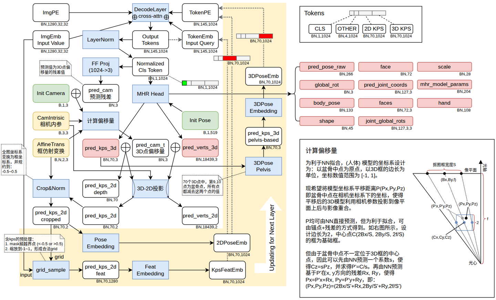
每个 Decoder Layer 的输出的结构见右上角，0 位的 CLS Token，第 1~4 位分是 Prev embed，Prompt_Embed，左手 Embed 和右手 Embed，后面还有两组 70 位的 2D 关键和 3D 关键点。这些都和前面编码器里构造的 Token Embed 的形式完全一致。
Output Token 经过 LayerNorm 后只取第一个 Token，即 1024 个值进行后续所有的解算。是的，关于人体的形体、姿势、mesh 等等信息都从这 1024 个值解算得来。此外，这里会解码出一个长度为3的关于人体框的几何信息向量 $(s, R_x, R_y)$ ，用于参与后续的偏移量计算。这个计算过程论文里完全没讲，这里进行详解。
为利于 NN 拟合，GT 里的 (人体) 模型的坐标系设计为：以两个盆骨点的中点为原点，以 3D 包围框的长边的边长为单位 2，将关键点的坐标数值范围归一化为 $[-1, 1]$ 。因此 NN 预测出来的 pred_kps_3d 是不能直接进行投影的。
而 3DB 输出的人体模型是在相机坐标系下的，同时也为了计算损失，需要将预测的 3D 模型坐标系平移距离 $P(Px,Py,Pz)$ ，即真实盆骨中点在相机坐标系下的坐标，这样才能使得平移后的 3D 模型利用相机参数投影到像平面上后与影像重合。当然，P 值均可由 NN 直接预测，但为利于拟合，3DB 采用了锚点+预测残差的方式。
因为人体的形态是确定的，像平面上的框的大小已知，因此只要包围框被归一化为2。那么根据相似三角形原理，框的中心点是可以算出来的。设 $S$ 是框中心在光轴上的投影到光心的距离，就可得到框的中心点坐标为 $C(2B_x/S, 2B_y/S, 2f/S)$ ，其中 $Bx,By$ 是原始框中心在像平面上的归一化坐标。3DB 就将这个 $C$ 点作为锚点。
但由于盆骨中点不一定位于 3D 框的中心点，因此可以先由 NN 预测一个系数 $s$ ，使得 $C_z=sP_z$ ，由于 $P'_z=P_z$ ，因此 $P'=C/s$ 。另由 NN 预测基于 $P'$ 在 $x, y$ 方向的残差 $R_x, R_y$ ，就能得到盆骨中点的平移距离了： $(P_x,P_y,P_z)=(2B_x/S'+R_x,2B_y/S'+R_y,2f/S')$ ，其中 $S'=sS$ 。
事实上，这个残差也不是直接预测的，而是由预测值与一个可学习的 Init Camera 向量相加得到，可谓是残差之残差了。上述过程在图里就是从 FF Proj 一路到 3D-2D 投影的过程。
接来下经过一个过滤和归一化操作，剔除超过边界的点，得到干净的预测 2D 投影点。再根据这些点从图像特征中采样，得到关键点的 1280 维图像特征，投影降维到1024维后更新到本层输出的 TokenEmbd 的对应维度上，其它维度的值则保持不变。此外，预测的 2D 和 3D 关键点还会分别行进行归一化和编码，更新到输入的 TokenPE 的对应维度上，其它维度的值也保持不变。更新后的 TokenEmbed 和 TokenPE 会被作为下一层的 Query 输入，完成一次迭代。
在解码器中，MHR 模型被视作外挂模型，我们不展开来讲。但 3DB 为了接入 MHR模型，在输入和输出的转换上还是做了不少工作，这里也用一张结构图进行展示。
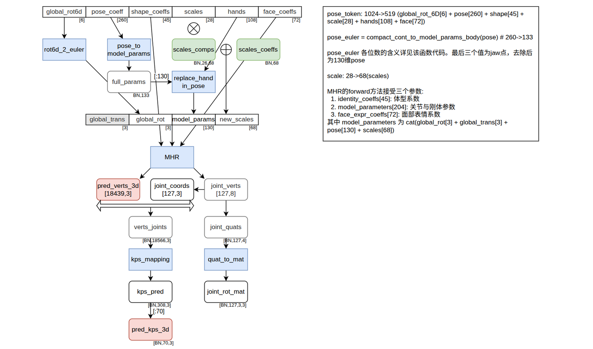
整个结构相对简单，如前文所述，MHR所接受的输入为三组参数：45维的体形系统，204维的关节姿态参数和72维的面部表情系数。其中关节姿态参数是由3维全局平移向量、3维全局旋转向量、130维姿态参数和68维骨骼变换参数构成。130维的姿态参数用于控制人体的动态姿态，包括关节旋转、肢体动作等，68维的骨骼变换参数则用于定义骨骼的固有属性 (如 limb 长度、骨骼比例)，对特定角色 / 表演者固定，不随姿态变化。
看到这里你可能会感到困惑，按照对经典 SMPL 模型的理解，这个68维的骨格变换和45维的体形参数的作用有什么不同？这其实正是 MHR 的一个先进之处，68 维骨骼变换参数聚焦内部骨骼结构，控制骨长、骨骼比例等硬结构属性，决定角色身高、肢体长短等基础骨架特征；形体参数 $\beta^s$ 专注外部表面形态，控制肌肉、脂肪等软组织的「软形态」细节，不改变骨骼结构，仅定义角色胖瘦、面部饱满度等外观特征。MHR 将二者分离，共同实现了骨架与皮肉的分层独立控制。
回到结构图，你可能已经注意到，模型输出的是一个 6 维向量 global_rot6d，并感到困惑：在 3D 空间里，欧拉角只要俯仰、偏航、翻滚3 个数，为什么要搞得这么复杂？原因只有三个字：连续性（Continuity）。
简单来说，连续性就是：参数变一点点，旋转出来的姿态也只变一点点。 欧拉角最大的问题在于它存在断点。虽然在大部分时候，你微调数值，物体会平稳旋转；但当旋转到某些临界角度时，哪怕你只继续调整了 0.001，欧拉角的数值也会突然发生剧跳（比如从 $180^\circ$ 瞬间跳到 $-180^\circ$ ）。这种数值上的“瞬移”就是不连续。在数学上，欧拉角就像一张强行剪开的地图，那些剪开的缝隙就是它无法逃脱的魔咒。
神经网络的优化过程就像在黑夜中下山，完全看不见全貌，只能靠脚下的坡度来决定下一步往哪走。优化逻辑是：「如果把参数改变 $0.001$ ，误差是不是会减小一点？」。那么，如果旋转表示是连续的，坡度就是平滑的，神经网络可以顺着坡一点点滑向最优解。但如果旋转表示是不连续的，就像山路上突然出现了一个断崖（跳变点）。当神经网络走到悬崖边，它会发现：哪怕参数只变了 $0.0001$ ，输出的旋转却发生了 $180^\circ$ 的巨变。这会导致梯度瞬间爆炸，或者让模型在断崖边反复横跳，根本无法收敛。
到这里你可能会问：既然 3 维的欧拉角会跳变，那用 4 维的四元数总行了吧？CVPR 2019 的这篇重磅论文给出了一个扎心的结论：在数学拓扑上，任何 4 维或更低维度的 3D 旋转表示，在全空间内都是不连续的。这就好比你想把一个完整的球皮完美地平铺在桌面上，无论你如何拉伸，如果不剪开几个口子 (产生跳变点)，你是无法把它铺平的。论文证明了，想要不剪口子，你至少需要 5 维甚至 6 维的空间来容纳它。
所谓的 6D 表示，其实非常直观。你可以把它理解为预测了 3D 坐标系里的两个坐标轴。一个完整的 3D 旋转矩阵 $3\times 3$ 有 3 个相互垂直的单位向量 (X轴、Y轴、Z轴)。第一步，让神经网络预测两个 3 维向量，加起来刚好 6 维。这两个向量可以看作是旋转后的 X 轴 和 Y 轴。第二步，神经网络预测的这两个向量可能不垂直，长度也不一定是 1，因此要先通过 Gram-Schmidt 正交化把第一个向量变单位长度，再让第二个向量强行变得与第一个垂直且单位化。第三步，当有了互相垂直的 X 和 Y，剩下的 Z 轴 只需要做一个叉乘就能自动算出来。
通过这种方式，我们用 6 个数构筑了一个永远平滑的旋转矩阵。无论神经网络输出的这 6 个数怎么变，最终生成的旋转矩阵都会随着它平滑地转动，再也不会出现“瞬移”的情况。
| 方法 | 身体模型 | Promptable | 部位覆盖 | 野外泛化 | 数据引擎 |
|---|---|---|---|---|---|
| SAM 3D Body | MHR | ✅ kpt+mask | body+hands+feet | SOTA | ✅ 主动选择 |
| HMR (2018) | SMPL | ❌ | body | 中 | ❌ |
| SMPLify | SMPL | ❌ | body | 弱 | ❌ |
| PIXIE | SMPL-X | ❌ | body+face+hands | 中 | ❌ |
| ExPose | SMPL-X | ❌ | body+face+hands | 中 | ❌ |
| PyMAF/PyMAF-X | SMPL(-X) | ❌ | body(+face+hands) | 中 | ❌ |
| PARE | SMPL | ❌ | body | 中 | ❌ |
| OSHMR | SMPL | ❌ | body | 中 | ❌ |
3DB 是唯一同时具备 MHR + promptable + 数据引擎 + 细粒度评测的方法。
"SAM 3D Body" 之名继承了 SAM (Segment Anything) 的 promptable 哲学。SAM 做的是交互式分割，3DB 把同样的promptable 思想搬到 3D 人体 mesh recovery。两者都支持 keypoint / mask prompt，但 3DB 输出的是 3D mesh 而非 2D 分割。
| 角色 | 论文 | 关系 |
|---|---|---|
| 底层模型 | MHR (2511.15586) | 3DB 是首个使用 MHR 的 HMR 模型 |
| 下游使用者 | F3G-Avatar (2604.09835) | 可用 3DB 从单图预测 MHR 参数作为输入 |
| 头部对比 | GaussianAvatars (2312.02069) | 3DB 是 MHR 界的 HMR/SMPLify；GaussianAvatars 是 FLAME tracking |
| 全身调研 | 3D 高斯人物与人脸重建调研 | 3DB 是单图前馈人体方向的代表 |
| 同事方案 | 同事方案分析 | 3DB 是同事"每帧预测 MHR 参数"的工具 |
| 应用 | 场景 | 优势 |
|---|---|---|
| 数字人输入 | 单图驱动 3DGS 数字人 | 预测 MHR 参数 → 驱动 F3G-Avatar 等 |
| AR/VR | 实时人体追踪 | 单图推理，promptable 交互 |
| 动作捕捉 | 无标记 mocap 替代 | 单图 → 全身 mesh + 关节 |
| 人机交互 | 手势/姿态识别 | body+hands+feet 全覆盖 |
| 影视/游戏 | 角色动画输入 | MHR 参数可直接驱动 rig |
| 人体分析 | 姿态/体型估计 | 解耦骨架/形状，各自独立分析 |
┌─────────────────────────────────────────────────────────────────────┐ │ 单图 → 3DGS 全身数字人 完整管线 │ ├─────────────────────────────────────────────────────────────────────┤ │ │ │ 单张图像 (in-the-wild) │ │ │ │ │ ▼ │ │ ┌────────────────────────────────────┐ │ │ │ SAM 3D Body (3DB) ← 本论文 │ │ │ │ • promptable (kpt / mask) │ │ │ │ • encoder-decoder │ │ │ │ • 输出 MHR 参数 │ │ │ └────────────────────────────────────┘ │ │ │ │ │ ▼ MHR pose + shape + expression 参数 │ │ │ │ ┌────────────────────────────────────┐ │ │ │ MHR 模型前向 ← 2511.15586 │ │ │ │ • 解耦骨架/表面 │ │ │ │ • 稀疏非线性 pose corrective │ │ │ │ • FACs 表情 │ │ │ └────────────────────────────────────┘ │ │ │ │ │ ▼ clothed MHR template │ │ │ │ ┌────────────────────────────────────┐ │ │ │ F3G-Avatar (2604.09835) │ │ │ │ • 身体分支 (BodyUNet) │ │ │ │ • 脸部分支 (3 × StyleUNet) │ │ │ │ • LBS + 3DGS 渲染 │ │ │ │ • 脸部对抗损失 │ │ │ └────────────────────────────────────┘ │ │ │ │ │ ▼ │ │ photorealistic 全身 3DGS 数字人 │ │ (含脸部细节 + 可动画) │ │ │ │ 关键: 3DB 提供输入接口, MHR 提供表示, F3G-Avatar 提供渲染 │ └─────────────────────────────────────────────────────────────────────┘
| 作者 | 单位 | 角色 |
|---|---|---|
| Xitong Yang (一作) | Meta | — |
| Devansh Kukreja | CMU | — |
| Don Pinkus | Meta | — |
| Anushka Sagar | Meta | — |
| Taosha Fan | CMU | — |
| Jinhyung Park | Meta | MHR 核心贡献者 |
| Jinkun Cao | Meta | — |
| Matt Feiszli | Meta | — |
| Jitendra Malik | UC Berkeley / Meta | 计算机视觉泰斗 |
| Piotr Dollar | Meta | FAIR 资深 |
| Kris Kitani | CMU | MHR 共同作者 |
团队横跨 Meta + CMU，包含 Jitendra Malik（CV 领域泰斗）和 Piotr Dollar（FAIR 资深研究员）。Jinhyung Park 和 Kris Kitani 同时是 MHR 论文的作者，确保 3DB 与 MHR 的深度协同。